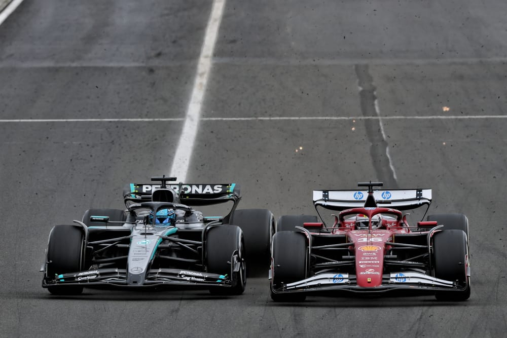

© 2025 Formula1.com. All rights reserved.
Location: Hungaroring, Hungary
Result: McLaren 1–2, Ferrari hiding behind "chassis failure," Verstappen struggles, Alonso Chacha holds up the DRS train.
The 2025 Hungarian Grand Prix served up everything fans crave: strategy gambles, fierce battles, and a pinch of raw emotion that rattled the paddocks. Charles Leclerc stole pole with a crisp lap, but the race quickly morphed into McLaren's playground, with Lando Norris and Oscar Piastri pulling off an epic 1–2 that shook the usual order.
Lando Norris & Oscar Piastri: McLaren's Dynamic Duo
The drama kicked off early when Norris, after losing two places in the opening volley, switched to a bold one-stop strategy that would eventually crown him race winner. The team's flawless pit work combined with his masterful tire management kept the pressure high on Piastri, who pushed relentlessly but couldn't quite snatch the lead. Meanwhile, the Aussie fans fired up the keyboards questioning if Piastri got a raw deal, joking that McLaren might have accidentally handed Norris the strategy playbook—and Piastri's was lost in the post. But in the heat of the battle, it was Norris's gamble that paid off, proving sometimes in racing, fortune really does favor the bold... or at least the one who manages their tires better!

© Planet Sport Limited 2025
Ferrari's "Chassis Failure" & Lewis Hamilton's Frustration
Ferrari's official line blamed a mysterious "failure in the chassis" for their sudden drop in pace; fans and insiders knew better—McLaren had simply outpowered them. "This is so incredibly frustrating. We've lost all competitiveness. You just have to listen to me, I would have found a different way of managing those issues. Now it's just undrivable. Undrivable. It's a miracle if we finish on the podium."
Leclerc expressed this frustration after struggling with major handling issues during the race, especially in the latter stint where his car's balance and grip deteriorated significantly. This made defending his position and maintaining pace extremely difficult, allowing rivals like McLaren's Oscar Piastri and Mercedes' George Russell to overtake him. Lewis Hamilton, who had come in to drive alongside Leclerc, aired his frustration publicly, calling himself "useless" post-qualifying—an admission that resonated with fans who could sense a Ferrari in crisis beneath the polished PR.
Alonso Chacha's DRS Blockade
Meanwhile, the midfield was buzzing with Alonso Chacha masterfully holding up the DRS train and frustrating faster rivals trying to slice through the pack. His old-school savvy showed veteran brilliance, turning the race into a strategic chessboard. Alonso's ability to control pace and manage his car under immense pressure demonstrated that experience and racecraft remain invaluable even as new talent storms the grid. Gabriel Bortoleto, the rookie sensation from Sauber, impressed by nabbing points in the hotly contested pack, signaling the arrival of a new generation ready to shake things up.Battery tech limitations and car setups favored cornering over straight-line speed, making overtaking at the Hungaroring a nerve-wracking challenge. This stalemate echoed the struggles many midfield drivers faced: the delicate balance between defending positions and preserving tire life in a race that rewarded strategic intelligence as much as outright pace.
Verstappen's Struggles & Norris's Triumph
Verstappen struggled to breach the top ranks, a rare sight for the championship hopeful, finishing well off the podium and raising questions about Red Bull's race setup.
As the laps ticked down, pit strategies and tire conservation became the deciding factors. Norris's gamble paid off with a tense but triumphant defense against Piastri's late charge, sealing McLaren's 200th F1 victory in style.

© Planet Sport Limited 2025
Race Summary & Final Classification
For fans, the 2025 Hungarian GP was a showcase of heart, grit, and team brilliance. The rollercoaster of emotions—Hamilton's self-criticism, Ferrari's thin excuses, Alonso's tactical mastery, and McLaren's rise—made it a perfect storm of drama and racing glory. Now all eyes turn to the next battleground, with stakes higher than ever.
🏁 Final Classification
Lando Norris — Master of strategy and composure
Oscar Piastri — Relentless rookie pressure
George Russell — Solid podium for Mercedes
Charles Leclerc — Pole sitter with fading grip
Fernando Alonso "Chacha" — DRS disruptor extraordinaire
Max Verstappen — Struggled to match pace
Lewis Hamilton — Frank admission, tough race
Verdict:
Hungaroring 2025 was an adrenaline-pumping blend of smart strategy, emotional highs, and tactical battles. McLaren's triumph rattled established giants while Alonso reminded everyone why experience counts. Lewis's brutally honest self-assessment and Ferrari's "chassis failure" story added flavor to a race that will be dissected for months to come.
Bring on the next chapter!